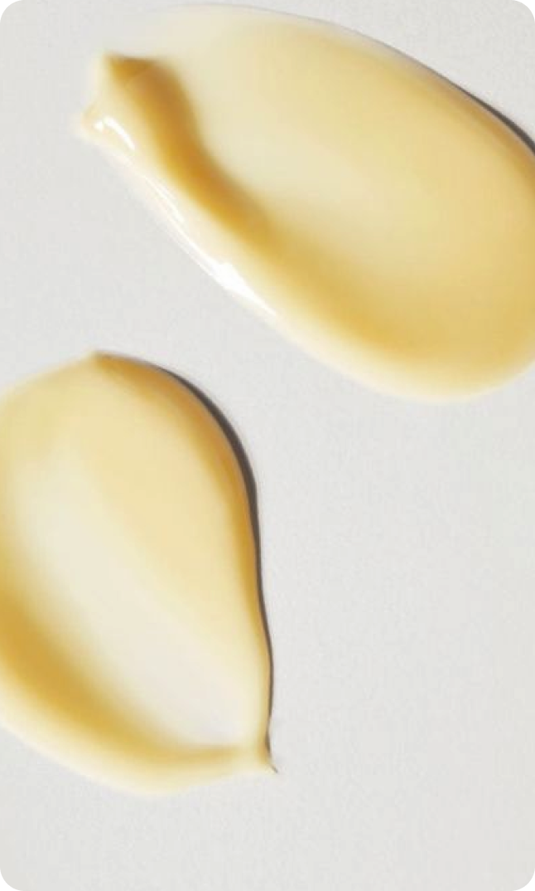

15 марта 2024
советы
уход
Уход за кожей вокруг глаз является важной частью регулярного ухода за кожей, особенно когда речь идет о борьбе с морщинами и отечностью. Вот несколько лучших продуктов и методов для эффективного ухода за этой нежной областью.
Кремы и сыворотки с ретинолом
Кремы и сыворотки с ретинолом являются популярными продуктами для ухода за кожей, особенно в борьбе с морщинами и другими признаками старения. Ретинол, или витамин A, является мощным антиоксидантом, который способствует улучшению текстуры кожи, уменьшению морщин, стимулирует производство коллагена и ускоряет обновление клеток кожи.
Кремы с пептидами
Пептиды представляют собой короткие цепочки аминокислот, которые являются строительными блоками белков. В косметике пептиды используются для стимуляции процессов восстановления кожи, укрепления ее структуры и борьбы с признаками старения. Они могут иметь различные функции, включая увлажнение, осветление пигментации, уменьшение морщин и повышение упругости кожи.

Гелевые маски и патчи
Гелевые маски — это косметические средства, которые содержат гелевую основу. Эти маски обычно используются для увлажнения и освежения кожи. Они обладают охлаждающим эффектом, что помогает снять воспаление и устранить отечность. Гелевые маски также способствуют улучшению циркуляции крови, что помогает уменьшить темные круги под глазами и улучшить тонус кожи.
Эти маски обычно содержат увлажняющие и питательные компоненты, такие как гиалуроновая кислота, витамины, экстракты растений и другие активные ингредиенты, которые способствуют улучшению состояния кожи.
Гелевые маски можно использовать как ежедневные уходовые средства или в качестве дополнительного ухода для особых случаев, например, перед важным событием или после тяжелого дня.

Массаж лица
Массаж лица может помочь снять отечность в области глаз и улучшить циркуляцию крови, что способствует уменьшению темных кругов и отечности. Вот несколько шагов для массажа лица, направленного на снятие отечности у глаз:
Шаг 1: Нанесите на область вокруг глаз легкий увлажняющий крем или гель для массажа. Это поможет уменьшить трение и предотвратить растяжение кожи.
Шаг 2: Используйте указательные пальцы, начните мягко массировать область под внешним уголком глаза, двигаясь по направлению к внутреннему уголку глаза. Это поможет стимулировать лимфодренаж и улучшить отток жидкости.
Шаг 3: После этого перейдите к массажу верхнего века. Начните мягко массировать верхний век от внешнего уголка глаза к внутреннему уголку глаза.
Шаг 4: Завершите массаж, делая круговые движения по области под бровями.